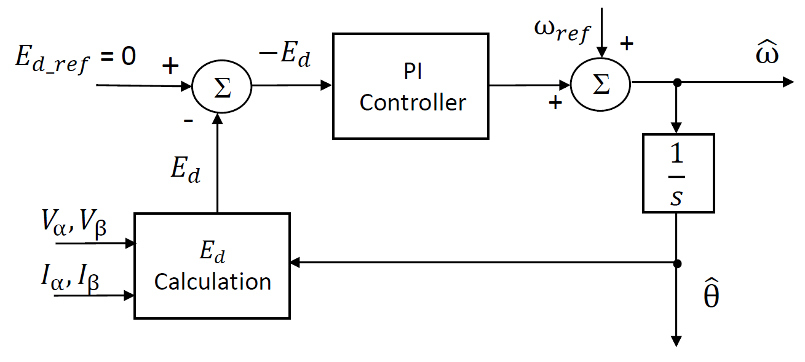
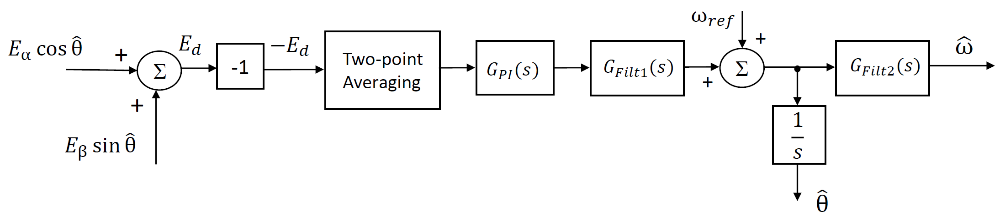
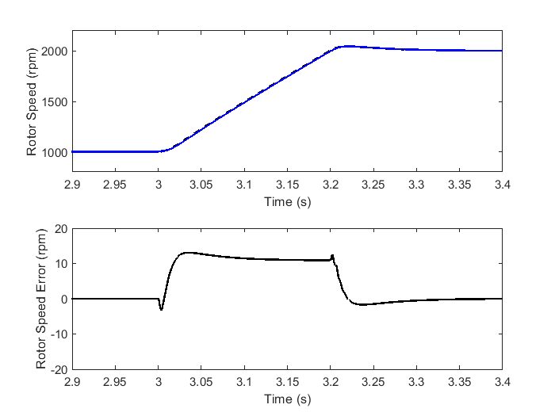
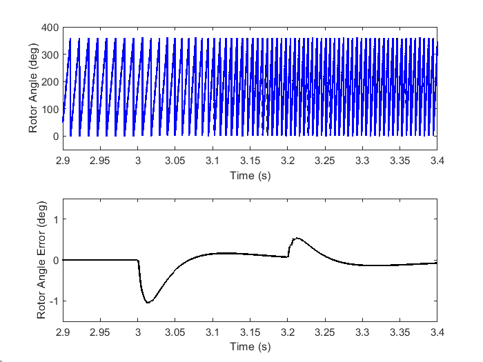

5.4.4. 角度跟踪锁相环（ATPLL）¶
5.4.4.1. 概述¶
角度跟踪锁相环（ATPLL）是一种为 PMSM的无传感器闭环速度控制提供的速度和转子角度估计算法。该算法具有 PLL状结构，通过在稳态下使反电动势的 d 轴分量为零来估计正确的转子速度和角度。由于 ATPLL 估计器结构中包含的 PI 控制器模块，转子速度和角度误差在稳态下被消除。ATPLL 估计器算法可用于具有或不具有转子凸性的 PMSM 电机的转子速度和转子角度估计。
5.4.4.2. 实现方框图和描述¶
图 5.70 展示了 ATPLL 估计器的基本原理。这里，估计器的输出是估计转子速度 \(\hat\omega\) 和估计转子角度 \(\hat\theta\)。反电动势的 d 轴分量 \(E_d\) 由电机定子电压 \(V_{\alpha}, V_{\beta}\) 和定子电流 \(I_{\alpha}, I_{\beta}\)计算得到。参考值 \(E_d\) 为零，因此误差等于 \(- E_d\)。此误差送入 PI 控制器。PI 控制器的输出与前馈速度项 \(\omega_{\mathrm{ref}}\)相加，此和即为估计速度 \(\hat\omega\)。估计速度经积分得到估计转子角度 \(\hat\theta\)。
{kind=link}

图 5.70 ATPLL：通用方框图¶
ATPLL 估计器的 MCAF 实现如 图 5.71所示。下面简要描述 ATPLL 结构中使用的不同模块。

图 5.71 ATPLL 实现¶
输入：ATPLL 算法首先计算反电动势分量 \(E_{\alpha}\) 和 \(E_{\beta}\) 由定子电压（\(V_{\alpha}\)， \(V_{\beta}\)）和定子电流（\(I_{\alpha}\)， \(I_{\beta}\)）使用电机电阻和电感值计算。这些反电动势值然后用于进一步计算 \(- E_d\) ，如 图 5.71所示。对于计算 \(E_{\alpha}\) 和 \(E_{\beta}\)，方程 5.30 用于无显著转子凸性的电机，方程 5.31 用于具有转子凸性的电机。电机根据其 凸性常数。在 5.30， \(R_{s}\) 和 \(L_{s}\) 分别为每相定子绕组电阻和电感值。在 5.31， \(\theta\) 为转子角度， \(L_0\) 和 \(L_1\) 由 5.32。
两点平均：如上所述，首先由 \(E_{\alpha}\) 和 \(E_{\beta}\) 计算出 \(- E_d\)，并送入两点平均模块。此模块有助于平滑比例-积分（PI）控制器的输入（\(G_{PI}(s)\)）。
\(G_{PI}(s)\) : 该模块表示一个 PI 控制器，它是 ATPLL 估计器的核心。在稳态下，PI 控制器的输入（即： \(- E_d\)）减小到零，从而将估计速度和角度的稳态误差也减小到零。 \(G_{PI}(s)\) 的 s 域表示如下：
\(G_{Filt1}(s)\) ：这是 PI 控制器输出的低通滤波器。滤波后，输出与参考速度（\(\omega_{\mathrm{ref}}\)）相加。此加法的结果为未滤波的估计速度，并经积分计算估计转子角度（\(\hat\theta\)）。 \(G_{Filt1}(s)\) 的 s 域表示如下，其中 \(\tau_1\) 为滤波器时间常数。
\(G_{Filt2}(s)\) ：PI 控制器输出与参考速度的加法结果通过此低通滤波器进一步滤波。此滤波器的输出为估计转子速度（\(\hat\omega\)）。 \(G_{Filt2}(s)\) 的 s 域表示如下，其中 \(\tau_2\) 为滤波器时间常数。
以下是与 PI 控制器和低通滤波器模块相关的一些重要点。
为了在整个运行速度范围内获得 ATPLL 估计器的稳定动态性能，积分增益 \(K_i\) 被设为依赖于参考速度 \(\omega_{\mathrm{ref}}\)。为了支持具有不同参数值的电机，比例和积分增益 \(K_p\) 和 \(K_i\) 被设为依赖于电机的反电动势常数 \(K_e\)。PI 控制器增益的经验调节显著简化了设计。 \(K_p\) 和 \(K_i\) 的经验方程在方程 5.36。
ATPLL 估计器支持速度反转。为了实现这一点，PI 控制器增益的符号根据参考速度的符号进行反转。
滤波器常数 \(\tau_1\) 和 \(\tau_2\) 根据一系列电机的控制算法性能确定。滤波器常数可在 Customize（自定义）页面 的 motorBench® Development Suite（开发套件）中调整。
5.4.4.3. 在具有凸性的 PMSM 中的应用¶
对于内置永磁电机（IPMSM）， \(d\)轴和 \(q\)轴电感不相等；通常 \(L_q\) 大于 \(L_d\)。为了量化转子的凸性程度，定义了以下凸性常数。这里， \(\xi\) 等于 \(\frac{L_q}{L_d}\)。
可以注意到，对于无凸性的电机，凸性常数等于 0，随着凸性增加而趋近 1。为了正确估计转子速度和角度，估计器使用相关方程非常重要，凸极和非凸极转子电机的方程不同。为了区分凸极电机和非凸极电机，定义了 0.25 的凸性常数阈值。因此，满足以下条件的电机被视为凸极电机。
这可以进一步简化为
ATPLL 估计器通过在其算法中选择合适的方程来适应凸极和非凸极转子的电机，从而保持转子速度和角度估计的准确性。
5.4.4.4. 示例结果¶
以下结果来自 Leadshine 400 电机的数值仿真。实际转子速度和 ATPLL 估计器估计转子速度的叠加图展示在 图 5.72 中，同时还展示了估计速度误差图。可以观察到稳态速度误差为零。
{kind=link}

图 5.72 ATPLL 的估计转子速度¶
实际转子角度和 ATPLL 估计器估计转子角度的叠加图以及估计角度误差展示在 图 5.73。此图对应于 图 5.72所示的相同速度瞬变。可以看到稳态角度误差为零。
{kind=link}

图 5.73 ATPLL 的估计转子角度¶
5.4.4.5. 实现说明¶
5.4.4.5.1. MCAF R5 – R8¶
ATPLL 滤波器常数 \(\tau_1\) 和 \(\tau_2\) 在 MCAF R5 – R8 中是固定的。